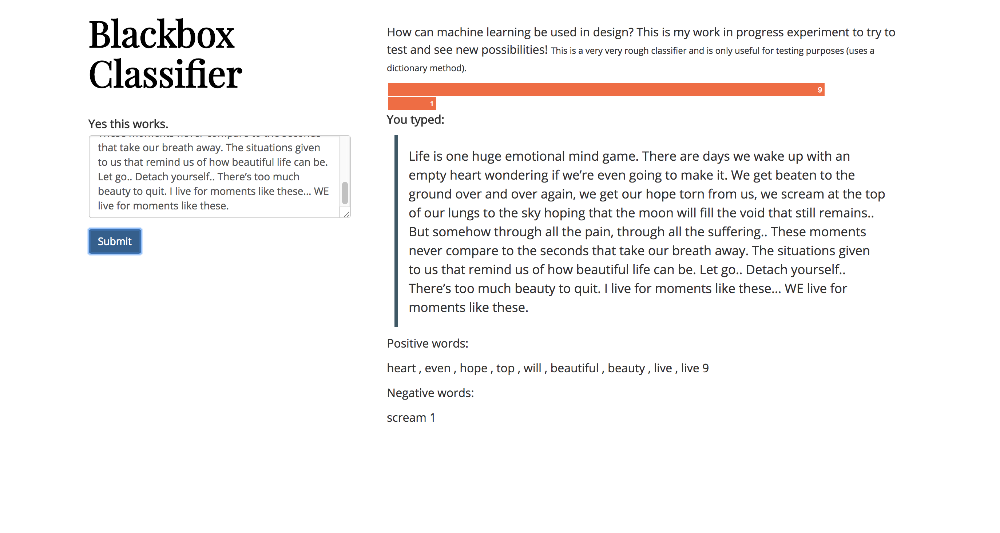
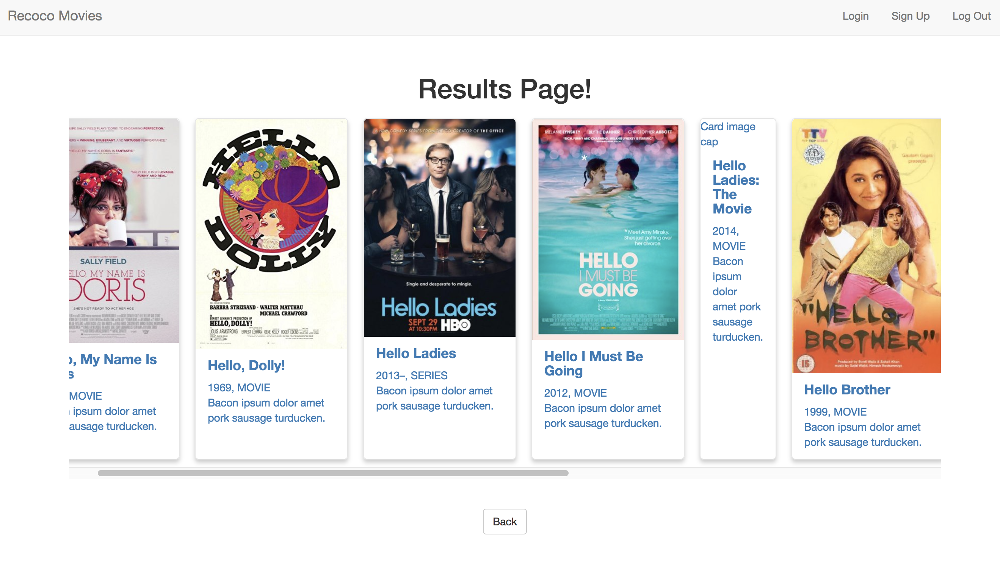
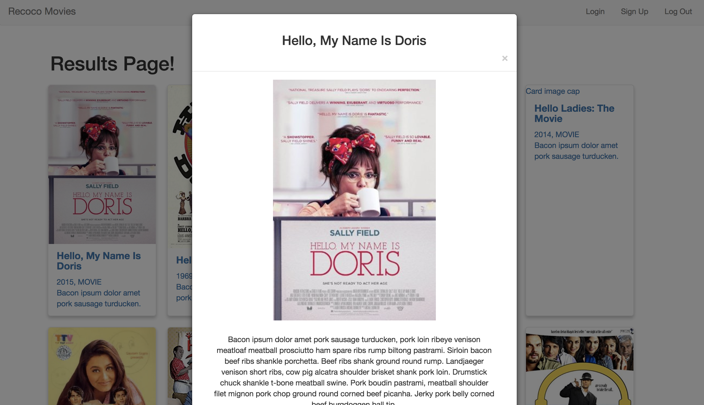
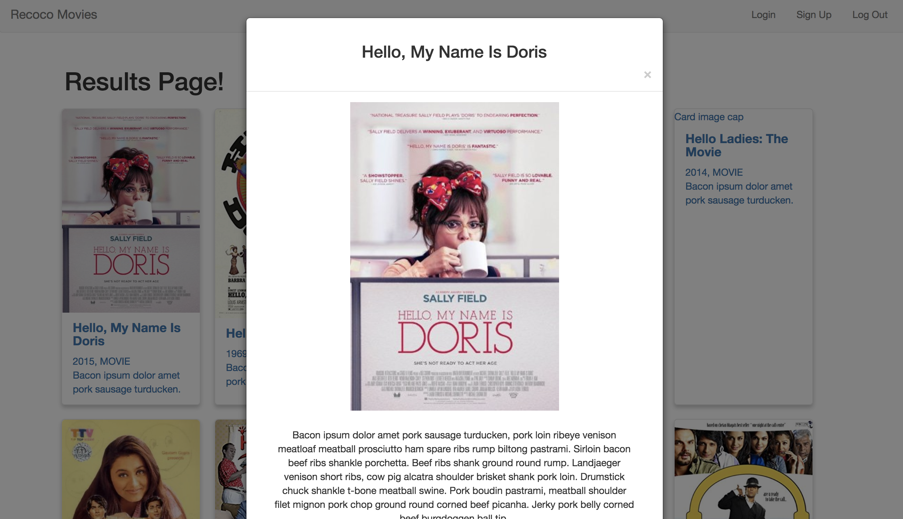

This is a collection of various web sites I have designed and coded. This includes both finished and unfinished projects.
These projects all have a coding component to them.
For what I'm currently working on (code-related), it's probably a better bet to check my github.
Web Design and Web Development
Craigslist's Listing Page Redesign

HTML
CSS
UI/UX
- The listing information was arranged into a table to make it easier to look at listings.
- To look through the listing faster, when a user hovers over the description, an extended caption of the listing along with a picture is shown, so the user can stay on the same page longer before she commits.
- Reorganized the filters for listing to make it more clear what the filters are. More advanced options are hidden.
- A map that you can zoom in and out of was created to make it easier to where the listing is located
FUSION Website

HTML
CSS
UI/UX
The visual design was redesigned completely from the previous website.
Design Decisions
- Hierarchy of information was important.
- The website link was on a flyer, but what we really want first timers to see is the are the club videos. Due to technical restrictions, a streaming video right on the website was not possible, it was decided to use screenshots that would let the user know that they were on fusions website, but also be a little funny to peak their interest so that they would watch the videos.
- The second most important piece of information was Membership which is why it is the second fold.
- Third are the updates of what event is happening next or a recap. The website acts mostly like a feed for information about the club.
- In addition, all of the other pages on the website were redone, such as the about, activities. This information is clearly articulated at the top for easy access. I had the ability to chose what content to add or remove. I chose to put the information most important for potential new members.
- Overall, the site aimed to be easy for potential members to find out what we were like.
Pork-folio


HTML
CSS
JavaScript
JQuery
UI/UX
- With a cute visual design that emphasized making projects looks like products.
- Light color palette with a splash of bright color.
- Left side menu with a strong splash of turquoise.
Black Box Classifier (Side-Project)

NLP
Vanilla Javascript
HTML
CSS
Data Sorting
(In Progress)
A quick exercise exploring how a web app classifier might have some use using a dictionary of positive and negative words. Try writing: "zombie zest".
Recoco - Web (Side-Project)



APIs
Javascript/ Express/ Node.js
HTML
CSS
Bootstrap 3
(In Progress)
This web app uses the OMDb API to display information about movies. It's a work-in-progress of Recoco using movie data.
Current Deployment (note: the layout looks fairly different as its a big work-in-progress.)
Purrfect Match Responsive Landing Page


HTML
CSS
Bootstrap 3
Landing page exercise using Bootstrap.
- Built using bootstrap
- Responsive bootstrap gallery with 3 breakpoints (large, medium, small)